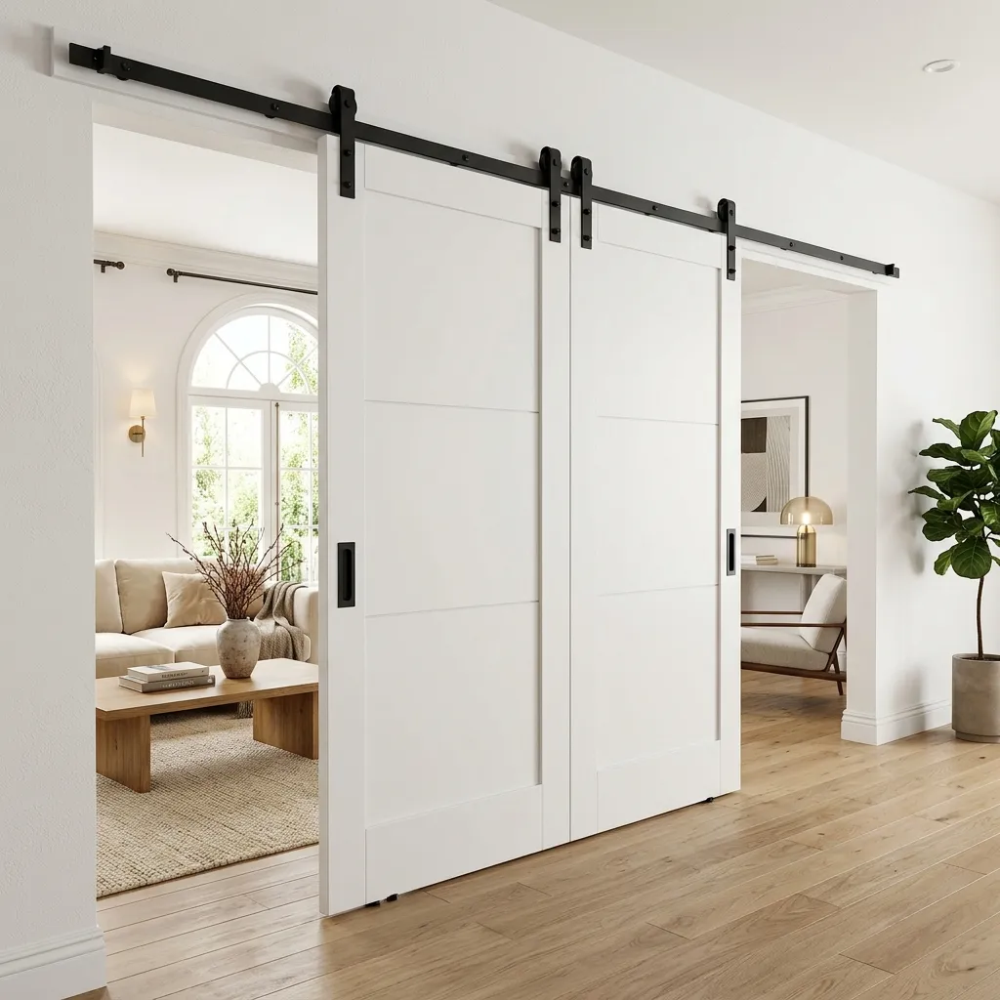
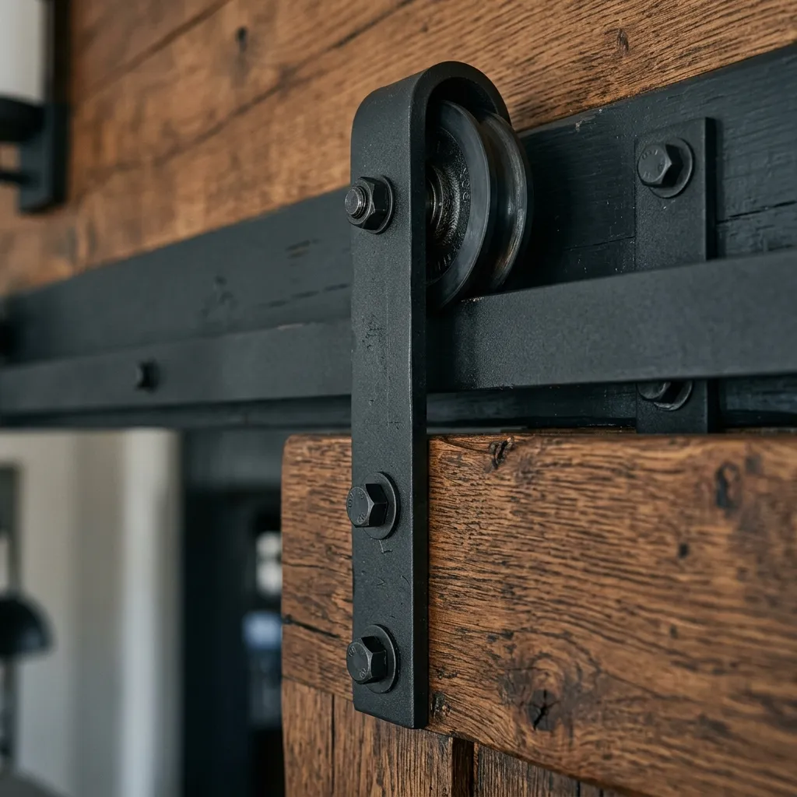
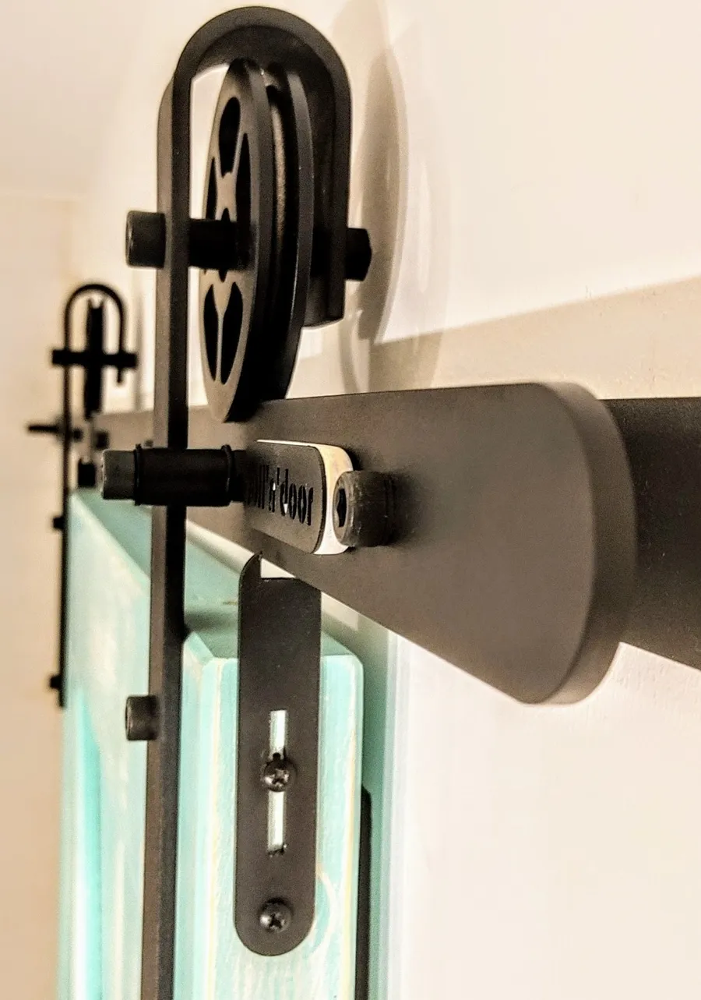
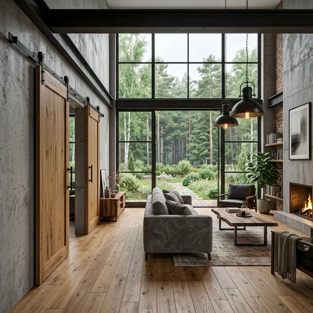

Környezettudatosság, praktikum és dizájn – avagy egy régi ajtólap 2. szülinapja.
Mostani bejegyzésünkben megpróbáljuk lépésenként bemutatni egy antik ajtólap felújítását és átalakítását tolóajtóvá. Tarts velünk!
A megfelelő alapanyag
Első lépés egy megfelelő méretű és típusú ajtólap felkutatása. Az ajtólap legyen legalább 10-20 cm-rel szélesebb, mint a nyílás ami elé kerülni fog és magasabb is, hogy legyen hely a sín felfúrásának.
Ez esetben egy fürdőszoba elé kerestünk ajtólapot, ahol a fény áteresztése is fontos szempont volt, ezért olyan ajtólapot kellett keresnünk ami felül üvegbetétes.

Tisztítás és előkészítés
Indulhat a munka! Első lépés az ajtón található több évtizednyi kosz, felvált festékréteg és a mindössze 2 mm vastag üveg eltávolítása.
A következő lépés az ajtólap aljának, tetejének és az oldalsó falcoknak a levágása, hogy mindenhol sík és párhuzamos éleket kapjunk. A vágást megelőzően a régi diópántokat is el kell távolítani.

A festékrétegek eltávolítása
Ha ezzel megvagyunk, jöhet az egész procedúra talán legkellemetlenebb része: az ajtólapon található számos rétegben felkerült festékréteg eltávolítása. Ehhez hőlégfúvóra, drótkefére és spaklira volt szükségünk.
A kiszerelt zár helyére a leeső anyagból fűrész és véső segítéségével kialakítottunk egy darabot, amit beragasztottunk.

Csiszolás és a tökéletes szín
Kialakult a külméret és forma, jöhet a finom csiszolás, majd portalanítás után egy alapozó festés. A rétegek közt finom visszacsiszolás után jöhet az egyedileg kikevert szín. A cél a csodálatos türkiz.
A kívánt szín elérése után selyemfényű lakk réteg került rá 2 rétegben, a száradási idők pontos kivárásával.
Az utolsó simítások
Elkészítettük az 5*15 mm-es nútot az alsó megvezetőhöz. Az üveg kiválasztásánál egy art deco stílusúra esett a választásunk, ami tökéletesen passzol a türkiz színhez.
Végül a hagyományos, nyíló ajtót lecseréltük az új, üvegbetétes tolóajtóra. Az eredmény magáért beszél!
